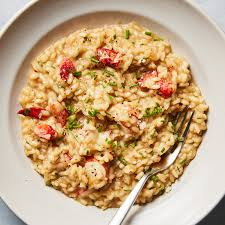

A simple, creamy risotto is a classic Italian dish made by slowly cooking short-grain rice (such as Arborio) in broth until it releases its starch, creating a velvety consistency. The process involves sautéing aromatics like onions in butter, toasting the rice, deglazing with wine, and gradually stirring in hot broth.
A classic, creamy Italian rice dish built on a base of starchy, short-grain rice (typically Arborio or Carnaroli) and slow-cooked with broth. It is characterized by its velvety consistency and rich flavor, usually achieved through the slow release of starch from the rice, finished with butter and Parmesan cheese.